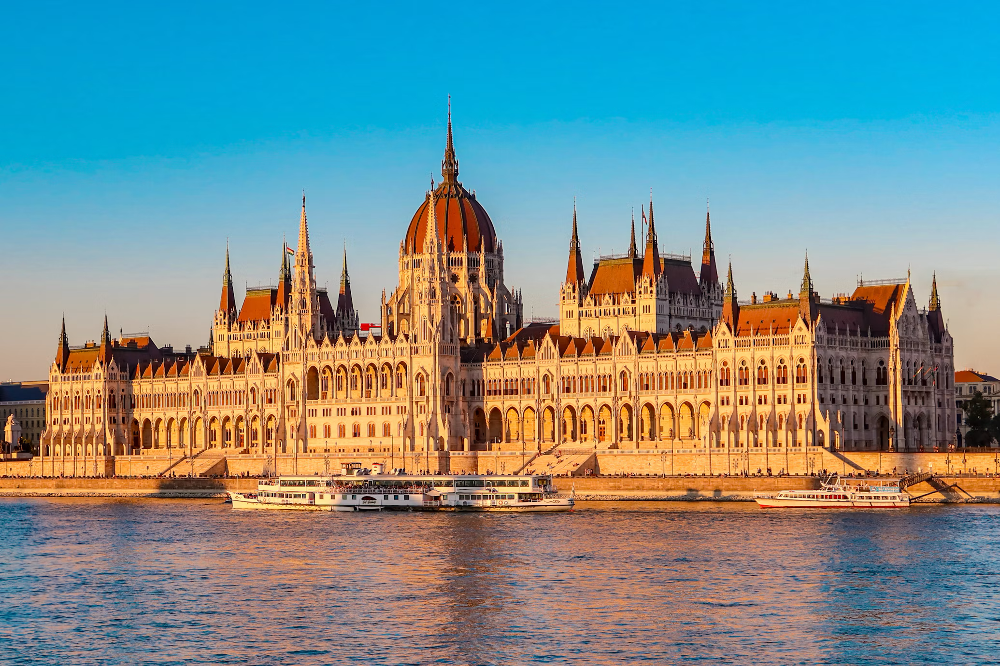

Pest e il Danubio · la città monumentale
01 · La città monumentale
Pest e il Danubio
Il Parlamento, la Basilica di Santo Stefano e il lungofiume raccontano la Budapest dei grandi scorci. Il memoriale delle Scarpe sul Danubio invita invece a fermarsi e ricordare: una città da osservare anche oltre la bellezza dei suoi edifici.